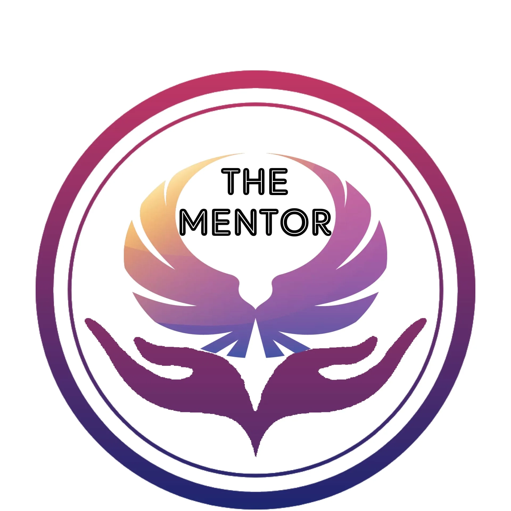

RESEARCH • SOCIAL IMPACT • SUSTAINABLE DEVELOPMENT • HUMAN POTENTIAL

Shatha Dweikat
شذا دويكات
باحثة في الأثر الاجتماعي مسؤولية مجتمعية وتنمية مستدامة تصميم برامج ومبادرات معرفية
Social Impact Researcher • CSR & Sustainable Development
أؤمن أن بناء مجتمعات أكثر استدامة يبدأ بفهم الإنسان واحتياجاته، وأن المعرفة والوعي يمثلان أساساً لصناعة أثر إيجابي حقيقي.
رحلتي ورؤيتي
خلفية أكاديمية ومهنية تجمع بين الإنسان، المعرفة، والتنمية المستدامة.
بناء المعرفة لصناعة أثر هادف
شذا دويكات، مهتمة بمجالات المسؤولية المجتمعية والتنمية المستدامة، أسعى إلى تطوير معرفتي في القضايا الاجتماعية والتنموية من خلال الجمع بين الخلفية الأكاديمية، التعلم المستمر، والممارسات المجتمعية.
أعمل على ترجمة هذا التوجه إلى محتوى معرفي وبرامج تدريبية تسهم في تمكين الأفراد والمؤسسات من تبني ممارسات مستدامة وفعالة، وتحويل المعرفة النظرية إلى خطوات عملية ذات أثر ملموس.
المجالات التي أهتم بها
المسار الأكاديمي والمهني
ماجستير في المسؤولية المجتمعية والتنمية المستدامة
الاهتمام بالقضايا المرتبطة بالتنمية، المجتمع، والمسؤولية المؤسسية.
بكالوريوس في الخدمة الاجتماعية والأسرة
بناء أساس معرفي في فهم القضايا الاجتماعية واحتياجات المجتمع.
عضوية نقابة الأخصائيين الاجتماعيين والنفسيين
عضوة في الهيئة العامة للنقابة، وحاصلة على مزاولة مهنة الأخصائي الاجتماعي.
تطوير مهارات التدريب والتواصل
من خلال التدريب في مجال الإلقاء، التواصل، وتطوير المحتوى.
الرؤية | Vision
بناء مساحات معرفية وإنسانية تساعد الإنسان على اكتشاف إمكاناته، فهم ذاته، وتنمية قدراته؛ ليصبح شريكاً فاعلاً في صناعة تغيير إيجابي ومستدام داخل مجتمعه.
الرسالة | Mission
نصنع مساحات للتعلم والنمو وتبادل المعرفة، نُمكّن من خلالها الأفراد من اكتشاف إمكاناتهم، تطوير قدراتهم، وتحويل المعرفة والوعي إلى خطوات عملية تسهم في بناء مجتمع أكثر وعياً واستدامة.
بماذا أؤمن
مبادئ تشكل رؤيتي تجاه الإنسان، المعرفة، وصناعة الأثر.
الإنسان أولاً
أؤمن أن فهم الإنسان واحتياجاته هو البداية لأي تغيير حقيقي ومستدام.
المعرفة مسؤولية
المعرفة لا تكتمل إلا عندما تتحول إلى وعي وممارسة وأثر إيجابي في المجتمع.
النمو رحلة مستمرة
التطور الشخصي والمهني يبدأ بالتعلم المستمر والانفتاح على فرص جديدة.
الأثر يتجاوز الفرد
نجاح الإنسان الحقيقي يظهر عندما يساهم في بناء مجتمع أكثر وعياً واستدامة.
مساحات للتعلم والنمو
برامج تدريبية معرفية تهدف إلى تطوير الوعي والمهارات وبناء القدرات.
رحلة التغيير
Journey of Change
رحلة تعليمية تهدف إلى دعم الوعي الذاتي، فهم مراحل التغيير، وبناء خطوات عملية نحو النمو والتطور الشخصي.
استكشف البرنامج
أساسيات التفكير الاستراتيجي للشباب
Fundamentals of Strategic Thinking for Youth
برنامج تدريبي يهدف إلى تطوير التفكير الاستراتيجي لدى الشباب من خلال تحليل الذات، بناء الرؤية، تحديد الأهداف، وتحويل الأفكار إلى خطوات عملية قابلة للتنفيذ.
استكشف المركز المعرفيالأبحاث والتحليلات
أعمال بحثية تهتم بقضايا الحوكمة، التنمية، والاستدامة.
إعادة تشكيل حوكمة التعليم العالي الفلسطيني في ظل عدم الاستقرار: دراسة تحليلية لمرونة المؤسسات الجامعية في مواجهة الأزمات المركبة
Reshaping Palestinian Higher Education Governance under Conditions of Instability: An Analytical Study of Institutional Resilience in Universities Facing Compound Crises
بحث تحليلي يتناول تحديات حوكمة مؤسسات التعليم العالي الفلسطيني في ظل الأزمات المركبة، ويركز على مفهوم المرونة المؤسسية وقدرة الجامعات على التكيف والاستجابة للظروف المتغيرة.
المقالات والتحليلات
قراءات وتحليلات حول المسؤولية المجتمعية، التنمية المستدامة، وقضايا الإنسان والمجتمع.
مساحة معرفية قيد التطوير
سيتم نشر مقالات وتحليلات أصلية تربط بين البحث العلمي، المسؤولية المجتمعية، وقضايا التنمية المستدامة.
مكتبة المعرفة
مصادر وأدوات معرفية لدعم التعلم والبحث والتطوير المستمر.
كتاب المسؤولية المجتمعية
مرجع معرفي حول مفهوم المسؤولية المجتمعية ودورها في تعزيز العلاقة بين المؤسسات والمجتمع.
فتح الكتابأساليب البحث العلمي في ميدان العلوم الإدارية
مرجع يساعد الباحثين والطلاب على فهم أساليب ومناهج البحث العلمي في المجالات الإدارية.
فتح الملفالدليل الإجرائي للبحث العلمي
دليل عملي يوضح خطوات إعداد البحث العلمي وتنظيم مراحله للباحثين والطلاب.
فتح الدليلملفات التنمية المستدامة
مجموعة مواد معرفية وعروض تقديمية مرتبطة بالتنمية المستدامة والقضايا التنموية.
استكشاف الملفعروض وتحليلات معرفية
مجموعة عروض تقديمية حول المبادرات التنموية، إدارة التغيير، وتحليل بيئات العمل.
استكشاف الملفاتالمبادرات والأثر الاجتماعي
مشاريع تهدف إلى بناء المعرفة وتمكين الإنسان وصناعة أثر مستدام.

The Mentor
منصة معرفية تهدف إلى مشاركة المعرفة، تقديم محتوى توعوي وتدريبي، وبناء مساحات تساعد الأفراد على اكتشاف إمكاناتهم وتطوير قدراتهم.
Knowledge Platformخطوة 19 | Step 19
مبادرة مجتمعية مقترحة تهدف إلى دعم وتمكين الفتيات اليتيمات من خلال التعليم، تطوير القدرات، وخلق فرص للنمو والاستقلال.
Concept Developmentتواصل معي
للتعاون البحثي، المشاريع التعليمية، والمبادرات ذات الأثر الاجتماعي.